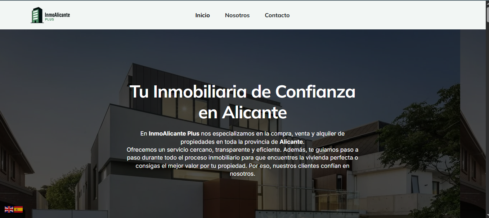
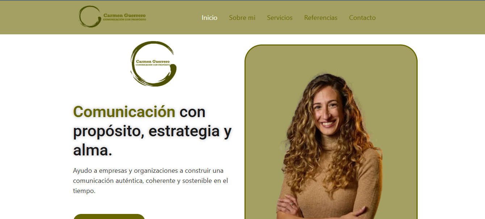
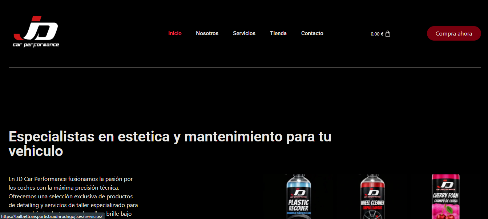

5 años de experiencia como
Ingeniero de Sistemas.


Plataforma web para agencia inmobiliaria. Gestión integral de propiedades, filtros de búsqueda avanzados y optimización para SEO.
Ver sitio web
Sitio web estratégico para marca personal. Diseño UI/UX minimalista orientado a conversiones, integrando un blog dinámico que consolida el posicionamiento de autoridad y el engagement.
Ver sitio web
E-commerce escalable para el sector automotriz. Flujo de compra optimizado (WooCommerce) y pasarelas de pago ágiles, diseñados específicamente para maximizar la tasa de conversión y ventas.
Ver sitio webEste portafolio es una demostración en vivo de mis habilidades de desarrollo front-end personalizado. Si buscas una web rápida, única y programada a medida sin plantillas, envíame un mensaje directo.
💬 Contáctame a través del chat de Workana